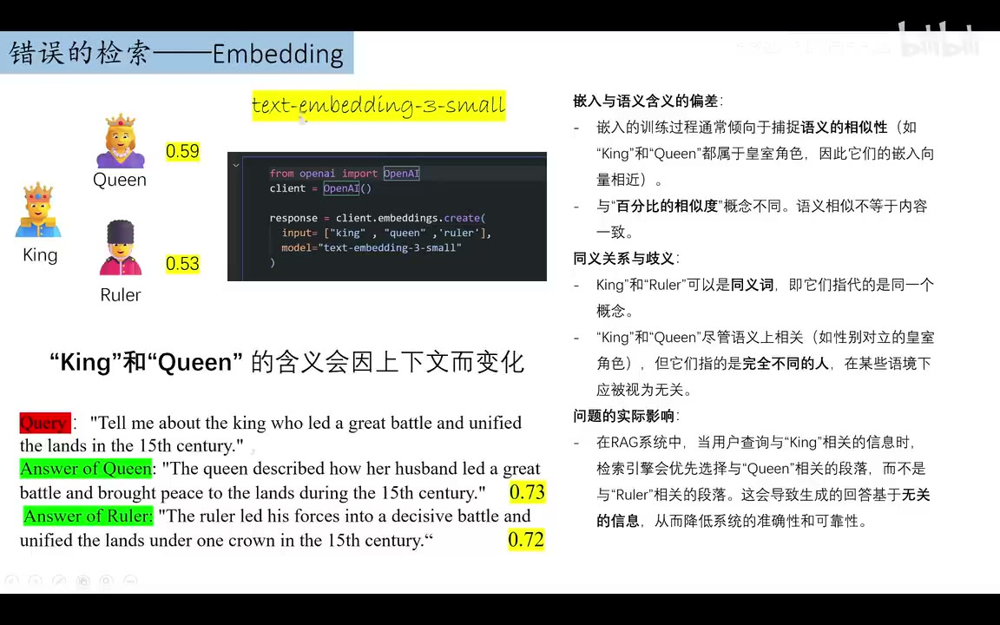

原视频 · 在线回看
点击后联网加载 B 站播放器；本地不下载整段视频。

原视频 · 在线回看
点击后联网加载 B 站播放器；本地不下载整段视频。
来源：果粒奶优有果粒｜Embedding 正在摧毁你的 RAG？？ · 25 分 54 秒 · 深度阅读
我们想查一位国王的经历，系统很快找到几段皇室相关的文字，其中一段在讲女王，另一段在讲统治者。它们都没有离开这个话题，看上去也都有用。但我们真正需要知道的是：哪一段在说我们要找的那个人，哪一段包含回答问题所需的事实？“与皇室有关”只能帮助缩小范围，还没有完成最后这个判断。
这个区别，正是理解向量检索局限的入口。RAG 会先找资料，再让语言模型参照资料回答。假如前面找来的段落只在主题上接近，人物、时间或关系却对不上，后面的模型就可能拿着不合适的材料组织答案。我们接下来沿着几个具体例子看：相似度究竟帮我们判断了什么，又有哪些判断仍然需要保留下来。
Embedding 通常译作“嵌入”，可以先理解为把一段文字转换成一组数字。许多数字放在一起形成一个向量，计算机就能通过这些向量比较文字之间的关系。不同词语或句子的向量会分布在一个空间里；按照模型学到的表示方式，某些相近的内容会落得更近。检索时，系统把问题也转换成向量，再寻找与它接近的文档片段。
king、queen、man、woman 是一种常见的入门示意。国王与女王都属于皇室角色，男人与女人之间又有另一种差别。借助这些词，我们可以想象文字中存在多种关系，向量表示可能把其中一些关系保留下来。不过，真正的 embedding 通常有许多维度，不能把每一维都简单命名为“性别”或“皇室”。这幅直觉图帮助我们认识关系，不要求我们把实际模型当成只有两条坐标轴的小地图。
检索得到的“相似度”也需要放回这个过程理解。它是按选定计算方法比较两个表示后得到的分数，并没有直接写着“这段话有多少概率正确回答问题”。比如某段话得分 0.73，不能解释成它有 73% 的事实正确率。计算机完成的是表示之间的比较；问题中的人名是否一致、某个条件是否满足，仍然要通过内容来判断。
在使用 text-embedding-3-small 的一组短词比较中，king 与 queen 的相似度为 0.59，king 与 ruler 的相似度为 0.53。前一组更高，并不难理解：国王和女王经常出现在相近语境，也都属于皇室角色。但假如我们正在读某位国王的经历，后文改用 ruler，也就是“统治者”，很可能仍在指这个人；换成 queen，则通常需要重新确认说的是谁。
“哪个词和 king 最像”需要放回具体任务中判断。关系有好几种：同属皇室是一种关系，在当前上下文中指向同一人又是一种关系。检索问题要求哪种关系，决定了什么材料更有用。ruler 的含义比 king 更宽，并不能在所有句子里完全互换；但它提醒我们，某种宽泛的主题接近，未必比当前任务需要的指代关系更重要。
再把词放进完整句子。问题询问一位在十五世纪领导战斗、统一土地的国王。一段候选写女王谈到丈夫如何领导战斗、带来和平；另一段写统治者带领部队并统一土地。两段都有战斗、土地和十五世纪这些内容，所以得到很接近的分数，分别为 0.73 和 0.72。完整句子增加了信息，却没有让分数自动完成“这一段是否回答了眼前问题”的判断。
这里要仔细读两段实际说了什么。女王那段提到了丈夫的战事，它也可能包含相关线索，不能仅凭出现 queen 就把整段判成无关。我们需要继续确认丈夫是否就是问题中的国王，哪些经历得到支持。这个例子最有用的地方，是让我们看到排序分数与事实判断之间的距离：两个分数只差 0.01，系统仍需要弄清人物和事件的对应关系。
先看对象。cat 与 dog 经常一起出现在宠物话题中，因此它们可能很接近。但如果我们问的是猫的某种属性，资料中“猫科动物”这个更大的类别也可能有用。猫与狗的共同生活场景，和猫属于猫科动物的分类关系，提供的是两种不同线索。究竟需要哪一种，要由问题决定。
即便找到上位类别，也还要确认属性能否用于具体对象。“猫科动物具有某种共同特征”，与“老虎在某个环境里的具体表现”，不能不加区分地移到家猫身上。类别关系能帮助我们扩大寻找范围，却不能替每条事实完成适用性判断。因此，检索的目标可以更具体：找到可能有关的类别知识，同时保留当前到底在问哪种动物这个条件。
时间的例子用到了 1900s、1800s 与“二十世纪”。如果上下文用 1900s 泛指二十世纪，那么“二十世纪”可能更接近任务所需的时期，1800s 的字形接近却无法满足这个条件。英文中的 1900s 也可能特指 1900 至 1909 年，所以实际查询还得依据上下文确认范围。年份写得相似，与年份范围一致，需要分别处理。
地点也是同样的道理。香港和上海都可能出现在繁荣城市、经济活动等相近语境中，因此有较高的主题相关性。但要回答香港的某件事，我们仍然需要香港的资料，或能够确定指向香港的别称。另一个城市再相似，也不能直接替代这个地点。地点例子提醒我们：检索可以利用共性找线索，最终回答必须守住问题指定的对象。
动作的例子更贴近日常。查询是 bake a cake，候选可能包括烤馅饼，也可能包括制作巧克力蛋糕。前一种与查询共享烘烤方式，后一种保留了蛋糕这个对象，却换了表达动作的词。如果任务重视制作对象，巧克力蛋糕可能更符合要求；如果任务正在比较烘烤工艺，馅饼资料也可能有用。我们得先知道用户究竟想解决什么，才能解释一个排序是否合适。
| 问题里需要保留的差异 | 相似表示可能抓住什么 | 还需要读懂什么 |
|---|---|---|
| 猫的属性 | 猫与狗同属常见宠物话题 | 当前属性属于哪类动物，能否用于猫 |
| 某一时期 | 年代写法接近 | 起止年份是否符合问题 |
| 香港的具体事件 | 香港与上海有相似城市主题 | 材料是否在说同一个地点 |
| 制作蛋糕 | 烘烤方式或食物主题相近 | 问题重视对象、方法还是其他条件 |
看完这几组例子，我们不必得出“向量完全不理解含义”这样的结论。向量已经捕捉到一些有用关系，问题在于这些关系未必与当前任务的优先顺序一致。我们需要把“相关”说得更精确：与哪个对象有关，满足哪个条件，能够支持哪项回答。
人物问答把这个问题推得更明显。阿方索二世与阿方索七世的名字接近，但“他的母亲是谁”中的“他”一旦换了人，答案就已经换了问题。无论关于另一位国王的回答写得多完整，都不能弥补身份错误。名字中的数字、拼写和所属王国，看起来只是几个字符，却可能决定整条事实属于谁。
这里比较了带有母亲关系词的人名短语，以及只有人名的短语。错误人名加上相同关系词，也可能得到很高的相似度，因为句子中很多部分仍然接近。可对这项查询来说，人物身份是必须满足的条件，无法靠其他词语接近来补偿。我们可以把它想成一道有前提的问答：先确定是哪位国王，再查他的母亲。第一步没有成立，第二步就失去对象。
这还带来一个理解模型错误时的提醒。看到模型把两个人混淆，我们能确认的是输出混淆；无法仅凭这一个结果，就知道它的训练资料里究竟出现了谁、漏掉了谁。关于训练语料导致错误的解释可以作为猜测，但还需要更多依据。对我们当前的检索问题，最直接可检查的仍然是：输入写的是谁，候选写的是谁，最后回答把关系连到了谁身上。
增加文字长度也不会自动保住身份。长段落可能包含更多背景，同时也出现更多人名和关系。要解决混淆，需要正确处理这些关系。只把“读得更多”当成保证，就可能让同一个错误在更长的文字里继续存在。
一种常见改进是重排序。初步向量检索先选出候选，重排序模型再把问题与候选内容放到一起比较，试着判断哪个更有帮助。相比把问题和文档分别编码后只比较向量，这一步有机会更细地考察词语之间的联系。对于前面的人名、关系词和限定条件，联合比较可能提供更丰富的判断依据。
这里讨论的一项训练思路，是先让模型学习一般对话、阅读理解和问答，再使用检索相关的数据继续训练，让它学习怎样选择候选以及利用资料作答。这说明，重排序的效果也依赖训练任务。模型要见过什么样的相关性要求，才更有机会在相似材料之间作出我们想要的区分。
不过，重排序接手的仍然只是初步检索交给它的候选。真正需要的资料若压根没有进入候选，排序通常只能在现有材料里重新排列，无法凭空取回遗漏文档。即使正确资料已经在候选里，排序模型也可能把相似的人名或不满足条件的段落排到前面。我们因此需要分别问：正确资料找回了吗？找回来以后排到哪里了？
重排序研究中的某一项分数，可以展示该模型在特定测试上的表现；它无法单独证明所有重排序方法都没有作用。判断一种改进是否修复了当前问题，需要看相同数据、相同问题、相同评价方式下的前后变化。这里应保留的警觉是“增加重排序后还要检查那些具体错误”，而非把一个分数推广成对整类方法的总评。
知识图谱试着把实体和关系显式组织起来。人物、地点或物品可以成为节点，“是谁的母亲”“属于哪个组织”可以成为连接。这样一来，我们就有机会沿着关系寻找答案。它与单纯比较文字向量的侧重点不同，尤其适合把“谁和谁有什么关系”作为需要保留的信息来看。
图谱中的关系也需要从材料中提取和维护。人名被错误合并，关系连到了另一个节点，后续沿图寻找仍然会出错。因此，图结构给我们一种表达关系的方法，同时引入了图谱构建是否准确的问题。不同图谱检索研究可能处理不同类型的提问，不能把某项任务的准确率、另一项任务的忠实度直接放在同一把尺上比较。
混合检索则把多种寻找线索的办法组合起来。关键词检索保留明确名称，向量检索寻找不同说法，摘要和元数据还能提供文档主题、归属等额外信息。元数据可以理解为伴随正文保存的说明，例如文件所属类别。每种方法都可能找到其他方法漏掉的材料，但返回结果合在一起以后，仍然要决定哪些更符合当前问题。
方法叠加还会延长处理过程。多运行一次检索、生成一次摘要或调用一次模型，用户就可能多等一段时间。如果增加了几道步骤，只让少数无关问题变好，却没有改善真正关心的人名或条件混淆，就需要重新考虑这些步骤是否值得。讨论复杂系统时，同时看回答质量和等待时间，才能知道新增能力有没有用在需要的地方。
当模型能够接收很长的上下文，我们可以尝试让它直接阅读更多资料，减少提前筛选造成的遗漏。这解决了一部分“资料没有机会被看见”的问题。不过，材料进入输入之后，模型还得找到有关位置，把人物、条件和结论正确联系起来。输入容量与利用资料的能力，仍然是两个需要分别观察的方面。
这里展示的长文本测试关注的是：随着输入变长，模型在同类任务上的表现如何变化。某些模型的成绩会下降，另一些模型下降不明显，也不代表分数已经足够高。这些结果属于对应模型版本与任务的表现。我们从中可以理解一项稳定的区别：允许读入多少文字，是容量；读入以后能否完成指定问题，是能力。做自己的问答系统时，需要测试后者。
这样，我们就能把前面几种方案接起来。重排序增加候选之间的比较，图谱增加显式关系，混合检索增加不同寻找路径，长上下文增加可阅读范围。它们各自改变了一个环节，但都还需要面对同一个问题：用户真正要求的对象和条件，有没有在最后判断中被保留下来。
最后的建议很具体：回到实际资料，看用户通常怎样表达，以及这些表达与文档里的说法是什么关系。维修手册中，同一种东西可能被叫作剃须刀，也可能被叫作刮胡刀。若系统只认识其中一种说法，另一种问法就可能漏找。先把这些别名联系起来，再使用向量筛选相关内容，就有机会减少这类遗漏。
同义词以外，还有上位词、下位词、整体词和部分词。动物与狗之间是类别关系：狗属于动物；汽车与车轮之间是整体和部件关系：车轮是汽车的一部分。两种关系都包含“有关联”，但它们的含义不同。狗是动物的一种，车轮却不属于“汽车的一种”。检索时保留这种区别，才知道一段广义说明能否用于具体对象，或者应该去哪个部件章节继续找。
| 关系 | 已有例子 | 对查找有什么帮助 |
|---|---|---|
| 同义或同一对象的不同叫法 | big 与 large；剃须刀与刮胡刀 | 换一种表达仍能找到对应内容 |
| 上位与下位类别 | 动物与狗；水果与苹果 | 从具体对象联系到类别知识，再检查适用条件 |
| 整体与部分 | 汽车与车轮；人体与心脏 | 从整件对象定位到部件，或查看部件所属整体 |
这些关系可以帮助构造检索规则，也可以帮助整理训练与测试样例。如果用户经常问部件，就要特别观察整机说明能否把我们带到正确部件；如果常用简称和正式名称不同，就要关注别名查询。哪一种关系最值得投入精力，取决于资料里什么问题最常出现。
于是，“embedding 是否有用”这个宽泛问题，被拆成了可以检查的具体问题。它是否把同一对象的不同叫法联系起来？是否混淆了相似的人名？是否忽略了时间范围？我们已经知道要找哪种错误，就能比较某项改动是否真正减少了错误。向量检索仍然有帮助，而它的帮助需要放进明确的任务和资料关系中理解。
向量相似度能帮助寻找相关材料，但身份、关系、时间和条件是否满足问题，需要在检索与回答中继续检查。
国王与女王的主题接近，不保证指向同一人；猫与狗、年份、城市和制作动作也有类似差别。重排序、图谱、混合检索和长上下文各自增加能力，却不会自动消除这些混淆。回到实际资料，明确常见词语之间的关系，才能知道应该优化和检验什么。
补充练习：选择一份公开产品说明，写两种指向同一对象的问法，再写一种只改了型号或部件的问法。分别找到能够回答它们的段落。比较时，先确认对象是否一致，再看材料有没有回答问题。你要练习的是解释一条结果为什么合适，或究竟差在哪个条件。